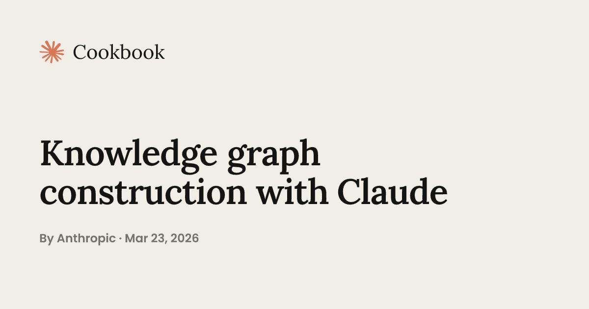
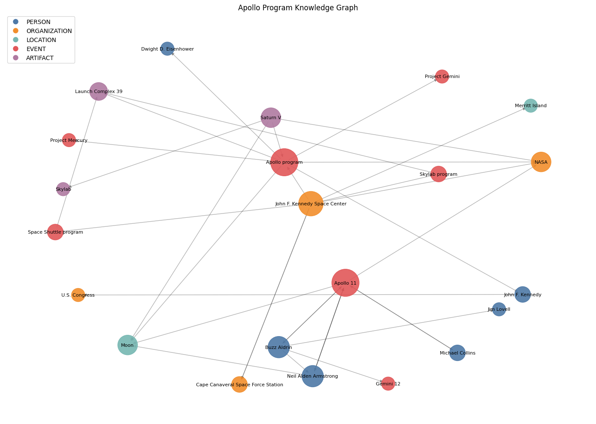

원문: Knowledge Graph Construction with Claude — Anthropic Cookbook

시작하며 — 왜 지식 그래프인가
Q. 비정형 문서 더미에서 “프로젝트 X에 참여한 사람과 협업한 사람은 누구인가?”, “이 사건과 연결된 벤더는 어디인가?” 같은 질문에 답하려면 어떻게 해야 하나요?
단일 문서에 답이 없는 질문입니다. RAG 검색도 사실을 체인으로 연결해주지 않죠. 필요한 건 지식 그래프입니다. 엔티티를 노드로, 타입 관계를 엣지로 만들어서 다중 홉 추론을 그래프 순회로 바꾸는 겁니다.
과거에는 도메인별 개체명 인식기(NER) 학습, 관계 분류기 학습, 엔티티 정규화 휴리스틱 작성… 그리고 데이터가 바뀔 때마다 세 가지를 다시 유지보수해야 했습니다. Claude를 사용하면 이 각 단계가 프롬프트 하나가 됩니다.
이 가이드에서 배우는 것
- Claude로 문서에서 엔티티와 관계 추출하기
- 중복 엔티티를 식별하고 병합하기
- 그래프를 시각화하고 요약 프로필 생성하기
- 다중 홉 그래프 순회로 복잡한 질문에 답하기
모든 것은 메모리에서 실행되며, 데이터베이스가 필요 없습니다. 기법은 Neo4j, Neptune, Postgres 인접 테이블로 그대로 확장할 수 있습니다.
설정
%%capture
%pip install anthropic requests networkx matplotlib python-dotenv pydanticimport json
from collections import defaultdict
from pathlib import Path
from typing import Literal
from urllib.parse import quote
import anthropic
import matplotlib.pyplot as plt
import networkx as nx
import requests
from dotenv import load_dotenv
from pydantic import BaseModel
load_dotenv()
client = anthropic.Anthropic()
EXTRACTION_MODEL = "claude-haiku-4-5"
SYNTHESIS_MODEL = "claude-sonnet-4-6"Q. 모델을 두 개 쓰는 이유가 있나요?
네. Haiku는 대용량·스키마 제약 추출 작업에서 속도와 비용이 중요한 역할을 맡고, Sonnet은 엔티티 해석과 요약에서 문서 간 상충하는 증거를 저울질해야 할 때 사용합니다.
말뭉치 구축하기
Q. 어떤 데이터로 시작하나요?
엔티티 해석이 실제로 작동하려면 겹치는 엔티티를 언급하는 여러 문서가 필요합니다. 아폴로 프로그램이 좋은 테스트베드입니다. NASA, 달, 여러 우주비행사, 발사체를 모두 언급하지만 각 문서마다 이름을 조금씩 다르게 부르는 6개의 위키피디아 요약을 사용합니다.
토큰 비용을 낮추기 위해 위키피디아 REST API에서 전체 문서가 아닌 요약만 가져옵니다. 프로덕션 파이프라인에서는 전체 문서를 청크 단위로 처리하면 되고, 추출 로직은 동일합니다.
ARTICLE_TITLES = [
"Apollo program",
"Apollo 11",
"Neil Armstrong",
"Saturn V",
"Buzz Aldrin",
"Kennedy Space Center",
]
WIKI_API = "https://en.wikipedia.org/api/rest_v1/page/summary/"
HEADERS = {"User-Agent": "claude-cookbooks/1.0 (https://github.com/anthropics/claude-cookbooks)"}
def fetch_summary(title: str) -> str:
slug = quote(title.replace(" ", "_"), safe="")
r = requests.get(WIKI_API + slug, headers=HEADERS, timeout=10)
r.raise_for_status()
return r.json()["extract"]
documents = []
for i, title in enumerate(ARTICLE_TITLES):
try:
documents.append({"id": i, "title": title, "text": fetch_summary(title)})
except requests.RequestException as e:
print(f"Skipping {title}: {e}")
if not documents:
raise RuntimeError("No documents loaded")
print(f"Loaded {len(documents)} documents")엔티티 및 관계 추출 — 구조화된 출력의 힘
Q. 기존 NER과 뭐가 다른가요?
전통적인 NER은 텍스트 구간에 라벨(PERSON, ORG, LOC)을 붙입니다. 전통적인 관계 추출은 그 구간 쌍을 관계 타입으로 분류하죠. 둘 다 도메인별 라벨링 데이터가 필요합니다.
여기서는 두 단계를 문서당 Claude 호출 한 번으로 통합합니다. 핵심은 구조화된 출력입니다. 출력 형태를 Pydantic 모델로 정의하고 client.messages.parse()에 전달합니다. Claude의 응답은 해당 스키마에 대해 검증되고 타입이 지정된 파이썬 객체로 반환됩니다. 정규식 파싱도, JSON 디코드 에러도, 방어적 isinstance 체크도 필요 없습니다.
EntityType = Literal["PERSON", "ORGANIZATION", "LOCATION", "EVENT", "ARTIFACT"]
ENTITY_TYPES = ["PERSON", "ORGANIZATION", "LOCATION", "EVENT", "ARTIFACT"]
class Entity(BaseModel):
name: str
type: EntityType
description: str
class Relation(BaseModel):
source: str
predicate: str
target: str
class ExtractedGraph(BaseModel):
entities: list[Entity]
relations: list[Relation]
EXTRACTION_PROMPT = """Extract a knowledge graph from the document below.
<document>
{text}
</document>
Guidelines:
- Extract only entities that are central to what this document is about — skip incidental mentions.
- For each entity, write a one-sentence description grounded in this document.
- Predicates should be short verb phrases ("commanded", "launched from", "part of").
- Every relation must connect two entities you extracted."""
def extract(text: str) -> ExtractedGraph:
response = client.messages.parse(
model=EXTRACTION_MODEL,
max_tokens=2048,
messages=[{"role": "user", "content": EXTRACTION_PROMPT.format(text=text)}],
output_format=ExtractedGraph,
)
return response.parsed_outputraw_entities = []
raw_relations = []
for doc in documents:
try:
result = extract(doc["text"])
except anthropic.APIError as e:
print(f"Skipping {doc['title']}: {e}")
continue
for ent in result.entities:
raw_entities.append({**ent.model_dump(), "source_doc": doc["title"]})
for rel in result.relations:
raw_relations.append({**rel.model_dump(), "source_doc": doc["title"]})
print(
f"{doc['title']:<25} {len(result.entities):>3} entities {len(result.relations):>3} relations"
)
print(f"\nTotal: {len(raw_entities)} raw entities, {len(raw_relations)} raw relations")Q. 추출 결과를 보면 같은 실체가 문서마다 다른 이름으로 등장하네요?
맞습니다. 이게 바로 다음에 해결할 엔티티 해석(entity resolution) 문제입니다.
엔티티 해석 (Entity Resolution)
Q. 왜 이 단계가 필요한가요?
원시 추출 결과를 보면 겹치는 언급이 있습니다. “NASA”와 “National Aeronautics and Space Administration”, “Neil Armstrong”과 “Armstrong”, 어쩌면 “the Moon”과 “Moon” 같은 식이죠. 이대로 그래프를 만들면 같은 개념이 분리된 노드로 나뉘어 엉망이 됩니다.
전통적 방식은 문자열 유사도(편집 거리, 토큰 자카드)와 블로킹 규칙을 사용합니다. 오타에는 작동하지만 “Edwin Aldrin”과 “Buzz Aldrin”에는 실패합니다. 글자가 하나도 겹치지 않지만 같은 사람을 가리키니까요.
대신 Claude에게 각 타입의 엔티티를 클러스터링하라고 요청합니다. 추출 단계에서 얻은 한 줄 설명을 모호성 해소 컨텍스트로 활용합니다. 설명이 중요합니다. “Armstrong — 최초로 달에 발을 디딘 사람”과 “Armstrong — 재즈 트럼펫 연주자”는 같은 이름이지만 병합하면 안 되죠.
class Cluster(BaseModel):
canonical: str
aliases: list[str]
class ResolvedClusters(BaseModel):
clusters: list[Cluster]
RESOLVE_PROMPT = """Below are {entity_type} entities extracted from several documents.
Some are different surface forms of the same real-world entity.
<entities>
{entity_list}
</entities>
Cluster them. Each input name must appear in exactly one cluster's aliases list.
Entities that are genuinely distinct get their own single-element cluster.
Use the descriptions to avoid merging entities that merely share a name."""
def resolve(entity_type: str, entities: list[dict]) -> list[Cluster]:
unique = {}
for e in entities:
unique.setdefault(e["name"], e["description"])
entity_list = "\n".join(f"- {name}: {desc}" for name, desc in unique.items())
response = client.messages.parse(
model=SYNTHESIS_MODEL,
max_tokens=2048,
messages=[{
"role": "user",
"content": RESOLVE_PROMPT.format(
entity_type=entity_type, entity_list=entity_list
),
}],
output_format=ResolvedClusters,
)
return response.parsed_output.clustersQ. 주의할 실패 모드가 있나요?
두 가지가 있습니다.
- 노드 손실: Claude가 어떤 원시 이름을 모든 클러스터에서 빠뜨리면,
alias_to_canonical에 해당 항목이 없어져 조용히 그래프에서 사라집니다. 프로덕션 해석기는 매칭되지 않은 이름에 대해 단일 요소 클러스터로 폴백해야 합니다. - 과도 병합: “Gemini 12” 같은 특정 임무가 설명이 겹친다는 이유로 “Project Gemini”라는 더 넓은 개념에 흡수될 수 있습니다. 첫 번째는 노드 손실, 두 번째는 정밀도 손실입니다.
그래프 조립 및 시각화
Q. 깔끔한 별칭 맵이 준비되면 어떻게 하나요?
모든 관계의 양끝을 정규명(canonical form)으로 다시 쓰고 NetworkX에 로드합니다. MultiDiGraph를 사용하는데, 두 엔티티가 여러 개의 서로 다른 술어로 연결될 수 있고, 방향도 중요하기 때문입니다.
G = nx.MultiDiGraph()
for e in raw_entities:
canonical = alias_to_canonical.get(e["name"])
if canonical is None:
continue
if canonical not in G:
G.add_node(
canonical,
type=canonical_info[canonical]["type"],
description=e["description"],
source_docs=[],
mentions=0,
)
G.nodes[canonical]["source_docs"].append(e["source_doc"])
G.nodes[canonical]["mentions"] += 1
for r in raw_relations:
src = alias_to_canonical.get(r["source"])
tgt = alias_to_canonical.get(r["target"])
if src and tgt and src != tgt:
G.add_edge(src, tgt, predicate=r["predicate"], source_doc=r["source_doc"])
Q. 이 시각화에서 뭘 읽을 수 있나요?
- 노드 크기는 차수(degree)에 비례합니다. 큰 노드가 말뭉치를 하나로 묶는 허브 엔티티입니다.
- 색상은 타입을 인코딩합니다. 그래프가 대부분 한 가지 색이라면 말뭉치가 좁은 것이고, 색이 잘 섞여 있으면 추출기가 사람·장소·사물의 전체 출연진을 찾고 있다는 뜻입니다.
- 연결성: 하나의 연결 성분(connected component)은 엔티티 해석이 제 역할을 했다는 의미입니다. 단편화된 섬이 있다면 병합되었어야 할 변형이 누락된 것입니다.
엔티티 요약 — 라벨에서 지식으로
Q. 각 노드에는 아직 첫 번째 문서의 한 줄 설명만 있죠?
맞습니다. 여러 문서에 등장하는 허브 노드에는 훨씬 더 나은 작업이 가능합니다. 모든 언급을 모으고, 그래프 이웃을 컨텍스트로 추가하고, Claude가 제대로 된 프로필을 종합하도록 합니다. 이 단계가 라벨의 그래프를 지식의 그래프로 바꿉니다.
class TimeRange(BaseModel):
start: str # YYYY or YYYY-MM, or "unknown"
end: str # YYYY or YYYY-MM, or "ongoing"
class EntityProfile(BaseModel):
summary: str
key_facts: list[str]
time_range: TimeRange
def summarize_entity(name: str) -> EntityProfile:
docs_with_entity = G.nodes[name]["source_docs"]
excerpts = "\n\n".join(
f"[{d['title']}]\n{d['text']}"
for d in documents if d["title"] in docs_with_entity
)
relations = (
"\n".join(f"- {name} --{d['predicate']}--> {tgt}"
for _, tgt, d in G.out_edges(name, data=True))
+ "\n"
+ "\n".join(f"- {src} --{d['predicate']}--> {name}"
for src, _, d in G.in_edges(name, data=True))
)
response = client.messages.parse(
model=SYNTHESIS_MODEL,
max_tokens=1500,
messages=[{
"role": "user",
"content": SUMMARIZE_PROMPT.format(
name=name, etype=G.nodes[name]["type"],
excerpts=excerpts, relations=relations
),
}],
output_format=EntityProfile,
)
return response.parsed_output그래프 쿼리하기 — 다중 홉 추론
Q. 지식 그래프를 만든 보상은 무엇인가요?
다중 홉 추론입니다. 단일 문서에 공동 발생하지 않는 사실들을 체인으로 연결해야 하는 질문에 답할 수 있습니다. “Apollo 11에 탑승한 사람들과 연결된 장소는 어디인가?” 같은 질문은 추출기가 한 문서에서 person→mission 엣지를, 다른 문서에서 person→location 엣지를 찾았어야 하고, 해석기가 person 노드를 통합했어야 그 엣지들이 실제로 만납니다.
def serialize_subgraph(center: str, hops: int = 2) -> str:
nodes = {center}
frontier = {center}
for _ in range(hops):
nxt = set()
for n in frontier:
nxt |= set(G.successors(n)) | set(G.predecessors(n))
frontier = nxt - nodes
nodes |= frontier
sub = G.subgraph(nodes)
lines = [f"({s}) --[{d['predicate']}]--> ({t})"
for s, t, d in sub.edges(data=True)]
return "\n".join(sorted(set(lines)))
def ask(question: str, graph_context: str | None = None) -> str:
if graph_context is not None:
prompt = f"""Answer using only the knowledge graph below.
Cite the specific edges that support your answer.
<graph>
{graph_context}
</graph>
Question: {question}"""
else:
prompt = question
response = client.messages.create(
model=SYNTHESIS_MODEL,
max_tokens=500,
messages=[{"role": "user", "content": prompt}],
)
return next(b for b in response.content if b.type == "text").textQ. 두 답변의 차이는 무엇인가요?
그라운드되지 않은 답변은 Claude의 사전 학습에 의존하며 틀릴 수 있습니다. 하지만 그라운드된 답변은 추적 가능합니다. 모든 주장이 특정 문서에서 추출한 엣지를 인용합니다. Claude가 사전 지식이 없는 프라이빗 말뭉치에서는 그라운드된 답변만 작동합니다.
스케일업 — 프로덕션에서의 확장
- 추출 비용: Haiku는 대규모 말뭉치에도 저렴하지만, 프롬프트 캐싱으로 스키마와 지침을 캐시하면 더 줄일 수 있습니다. Message Batches API는 24시간까지 기다릴 수 있는 작업에 50% 할인을 제공합니다.
- 대규모 엔티티 해석: 1만 개의 PERSON 엔티티를 한 번에 넣을 수는 없습니다. 저렴한 신호(같은 성, 겹치는 토큰, 임베딩 유사도)로 블로킹한 뒤 50~100개 단위 블록에서 Claude가 중재합니다.
- 증분 업데이트: 새 문서의 엔티티를 기존 정규 집합에 대해 해석하고 새 엣지만 추가합니다.
- 저장소: NetworkX는 수십만 엣지까지 괜찮습니다. 그 이상은 Neo4j, Neptune 또는 Postgres 3개 테이블(
entities,relations,aliases)로 매핑합니다.
마무리
프롬프트만으로 완전한 지식 그래프 파이프라인을 구축했습니다:
- 구조화된 출력으로 엔티티 및 관계 추출 — Pydantic 스키마 → 보장된 타입 안전 출력
- 엔티티 해석 — Claude가 설명 기반으로 모호성 해소
- 그래프 조립 및 시각화 — NetworkX로 방향성 멀티그래프 구성
- 엔티티 요약 — 다중 출처를 종합한 프로필 생성
- 다중 홉 그래프 쿼리 — 서브그래프 직렬화 + Claude 추론
evaluation/의 평가 하네스가 피드백 루프를 제공합니다. 추출 프롬프트를 변경하고, 스코어러를 재실행하고, F1 변화를 관찰하세요. 이 루프가 데모를 프로덕션 시스템으로 바꿉니다.